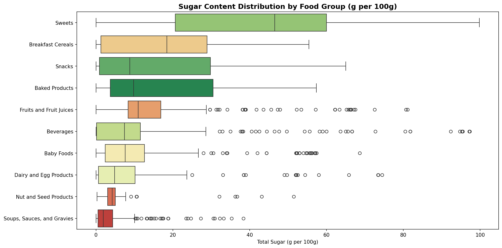
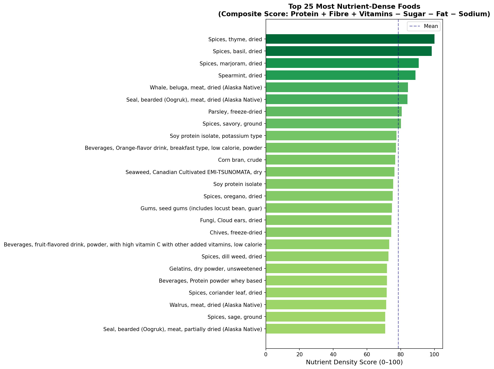
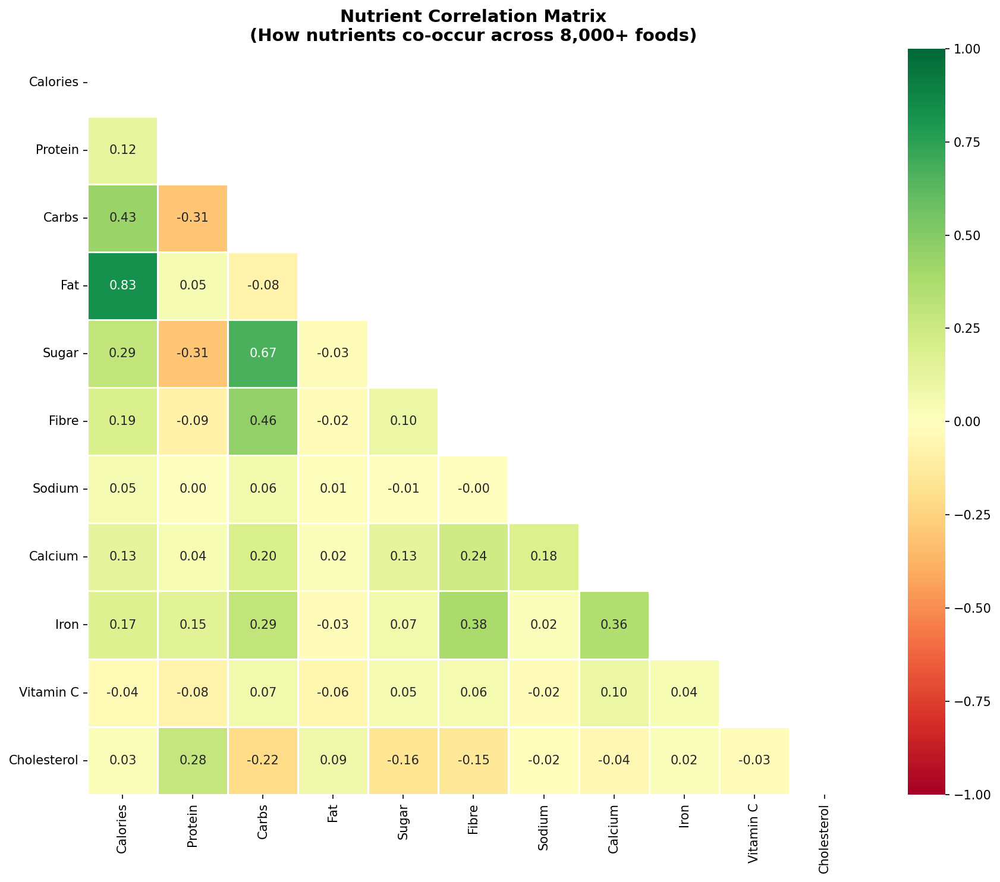

Five analyses on the USDA FoodData Central dataset (SR Legacy, 7,793 foods) — protein efficiency, hidden sugar, a composite nutrient density score, macro distribution, and nutrient co-occurrence.
Finfish and shellfish lead at 16.4g protein per 100 kcal — nearly 3× the density of vegetables (5.75g), even though vegetables still rank in the top 10 groups.
Breakfast cereals, snacks, and baked products all average 16–18g sugar per 100g — comparable to fruit juice. The real outliers are individual items: powdered drink mixes and dried fruit hit 80–97g/100g.

Ranking all 7,793 foods by protein + fibre + vitamins − sugar − fat − sodium surfaces dried spices and herbs at the top — a genuine artifact of per-100g scoring, since nobody eats 100g of dried thyme in one sitting.

A ~55 percentage-point swing in protein share alone: finfish sits at 68% protein / 4% carbs / 28% fat, while vegetables flip to 14% protein / 74% carbs / 12% fat.
Fat tracks calories tightly (r=0.83) as expected — but fat and cholesterol barely correlate here (r=0.09), and sugar/fibre show a weak positive relationship (r=0.10) rather than the trade-off conventional wisdom predicts.
